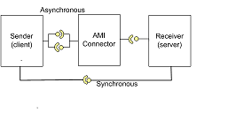

General
This tutorial explains how to use Asynchronous Method
Invocation for CCM (AMI4CCM). The AMI Connector component handles the
asynchronous invocation using CORBA AMI.
System
The system consists of three components:
- A Sender component
- A Receiver component
- An AMI connector
In this tutorial a Sender wants to invoke methods on the
Receiver asynchronously and synchronously. Therefor the Sender and the Receiver
are connected via an AMI connector for the asynchronously invoked methods and
via a direct connection for the synchronously invoked methods. The AMI connector
itself will be completely generated by IDL and will handle details of executing
the asynchronous invocation and callback to the user component. The Receiver
(Server side) isn't aware of any AMI clients.

There are different methods used in this example in
order to show different aspects:
- method with return value, in- and out argument:
long foo (in string in_str, out string answer);
- void method with out argument:
void hello (out long answer);
-
attribute short rw_attrib
getraises(InternalError)
setraises (InternalError);
- method to get an readonly attribute:
readonly attribute short ro_attrib raises (InternalError);
Directory structure
The following convention is used:
- |--*_asm
: Directory contains an assembly.
- |--ports : C:\ACE\latest\ACE_wrappers\TAO\CIAO\connectors\ami4ccm\tutorials\Hello\Tutorial\02_idl.html
Directory contains common IDL code for the assembly.
- |--*_comp : Directory contains an
component.
- |--
ports : Directory contains common IDL code for the component.
- |-- src : Directory contains the IDL
and *_exec-files for the component.
File naming convention
The following convention is used:
- *_defn.idl - These files will contain definitions,
like enumerations, constants and so on. Typically located in *_asm/ports.
- *_obj.idl - These files will contain the interfaces
between components. Typically located in *_asm/ports.
- *_comp.idl - These files will contain the component declaration. Typically located in *_asm/*_comp/src.
Additional conventions
- MPC files are located in
the same directory as the IDL for the common mpc files and in the same
directory as the executor files for the component mpc files.
- Files that were generated by the TAO IDL compiler
should all be located in one subdirectory. In this tutorial the name of this
subdirectory is "GeneratedCode".